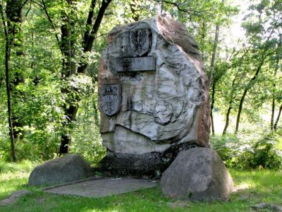
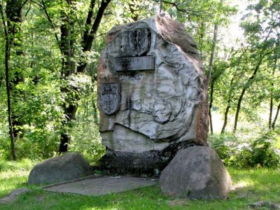

Galeria
- krainy geograficzne
- minerały i skały
- dziedzictwo poprzemysłowe
- scieżki dydaktyczne
- wydarzenia
- wszystkie
 Wyżyna Częstochowska cz. 1
Wyżyna Częstochowska cz. 1
 Wyżyna Częstochowska cz. 2
Wyżyna Częstochowska cz. 2
 Minerały województwa Śląskiego
Minerały województwa Śląskiego
 Cieszynity, pikryty i syenity
Cieszynity, pikryty i syenity
 Skały płaszczowiny magurskiej
Skały płaszczowiny magurskiej
 Kamień w architekturze - Gliwice
Kamień w architekturze - Gliwice
 Kamień w architekturze - TUiTAM

Głazy narzutowe
Kamień w architekturze - TUiTAM

Głazy narzutowe
 Park Tradycji w Siemianowicach
Kopalnia Ćwiczebna w Dąbrowie Górniczej
Park Tradycji w Siemianowicach
Kopalnia Ćwiczebna w Dąbrowie Górniczej
 Skansen Górniczy Królowa Luiza w Zabrzu
Zabytkowa KWK „Ignacy” w Rybniku
Skansen Górniczy Królowa Luiza w Zabrzu
Zabytkowa KWK „Ignacy” w Rybniku
 Dziedzictwo poprzemysłowe - TUiTAM
Dziedzictwo poprzemysłowe - TUiTAM
 Rudniki - Kamieniołom Lipówka
Rudniki - Kamieniołom Lipówka
 Hutki-Kanki - Po rezerwacie Góra Chełm
Smoleń - Po Dolinie Wodącej
Hutki-Kanki - Po rezerwacie Góra Chełm
Smoleń - Po Dolinie Wodącej
 10 pytań o Ziemię
10 pytań o Ziemię
 Trasa turystyczna w Jaskini Głębokiej
Trasa turystyczna w Jaskini Głębokiej
 Operacja Tyranozaur
Operacja Tyranozaur